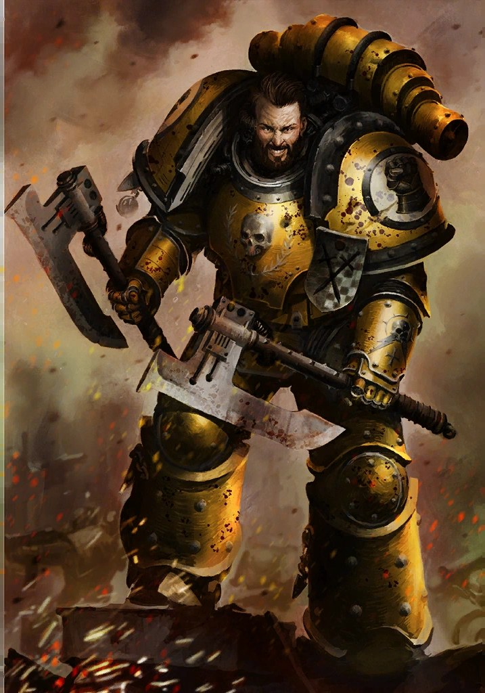

Third Founding
| Third Founding | |
|---|---|
| Founding of the Adeptus Astartes | |
 Fafnir Rann of the Imperial Fists, first master of the Executioners, a Chapter of the Third Founding | |
| Date | M31, after the Great Scouring[a] |
| Proposed by | Rogal Dorn, Primarch of the Imperial Fists |
| Authority | High Lords of Terra |
| Preparation | More than forty years |
| Writs of succession | Over one hundred; nine to the Ultramarines |
| Notable Chapters | Executioners; Scythes of the Emperor; Angels Erythrean; Death Wardens |
| Preceded by | Second Founding (c. 021.M31) |
| Followed by | Fourth Founding (after 546.M32) |
The Third Founding was the first creation of new Chapters of the Adeptus Astartes after the Second Founding had divided the Space Marine Legions. It took place in the 31st millennium, in the years after the Great Scouring, and was made at the request of Rogal Dorn, who put the need for new Chapters to the High Lords of Terra. After more than forty years of preparation the High Lords granted over a hundred writs of succession, nine of them to the Ultramarines alone.[1]
The Chapters of the Third Founding are among the oldest in the Imperium. They include the Executioners of the Imperial Fists' line and the Scythes of the Emperor of the Ultramarines', and probably the Angels Erythrean and the Death Wardens of the Blood Angels' line. The records of many others have been lost or deliberately concealed.[1]
A Founding is the creation of a group of new Chapters by edict of the High Lords. The Imperium has held at least twenty-six since the First Founding of the Legions, the most recent being the Ultima Founding of the Primaris Space Marines at the end of the 41st millennium. A list of the known Foundings is given below.
Foundings
[edit]New Chapters are not raised one by one as the need arises but in deliberate groups called Foundings. Only the High Lords of Terra can order one, for it requires the mobilisation of many parts of the Imperium's government, and decades or centuries of planning may precede the announcement. The Adeptus Mechanicus creates, tests and cultures the gene-seed from which the new Chapters will be made, and whole forge worlds may be turned over to producing their arms, armour and ships. A homeworld must be found and its people studied over generations to make sure their stock is pure, a fortress-monastery built or, for a fleet-based Chapter, a great Chapter barque. Even once a Founding has been declared, it is usually a century before its Chapters are ready to fight.[1]
The gene-seed of each new Chapter is drawn from an existing Chapter, which is granted a "writ of succession" for the purpose. The donor Chapter's Masters may help plan Foundings from their own line; the Disciples of Caliban, for instance, were raised on the direct appeal of the Supreme Grand Master of the Dark Angels, an unusual request. Foundings made in haste in times of crisis have often gone wrong, for gene-seed cultured too fast is liable to degrade or mutate.[1]
Background
[edit]The Second Founding of about 021.M31 had replaced each loyal Legion with a group of Chapters of about a thousand warriors. The Codex Astartes limited the size of every Chapter. The Great Scouring and the wars that followed it cost the new Chapters heavily, and the Imperium's frontiers were long. The only remedy was to create more Chapters.[2]
Rogal Dorn, the Praetorian of Terra, had been the most stubborn opponent of the division of the Legions, and he had accepted it only after the Iron Cage. Having accepted it, he became the advocate of the next step. He put the case for a further Founding to the High Lords himself.[3]
The Founding
[edit]The preparation took more than forty years. When it was done, the High Lords issued over a hundred writs of succession to Chapters of both the First and the Second Foundings. The Ultramarines, whose gene-seed was the most stable and whose Chapter had already supplied many Second Founding Chapters, received nine writs.[1]
The Register singles out two of the new Chapters, one of Dorn's line and one of Guilliman's, as highly aggressive. Both were commanded from the first by warriors who had served in the Legions.[1]
The Executioners
[edit]
The Executioners are of the line of Rogal Dorn. Their first master was Fafnir Rann, reputedly the most ruthless of Dorn's later captains, a veteran of the Siege of Terra. The Chapter was created not for the defence of a region or a strategic post but for the single task of finding and killing the enemies of mankind, and it has kept that character. Its homeworld is the binary world of Stygia-Aquilon.[4]
The Scythes of the Emperor
[edit]
The Scythes of the Emperor trace their history to the Horus Heresy, when they were the 199th Company of the Ultramarines Legion, called the Aegida, set to guard the restricted world of Sotha and the alien device known as the Pharos. After the Second Founding Roboute Guilliman kept the survivors of the Aegida as an eleventh "ghost company" of the Ultramarines Chapter to continue the watch, in breach of his own Codex. In the Third Founding their last surviving member, Captain Oberdeii, was made the first Chapter Master of a new Chapter, which he named the Scythes of the Emperor.[5]
The Scythes kept their watch over Sotha and the surrounding sectors of the Ultima Segmentum for ten thousand years. In 992.M41 Hive Fleet Kraken destroyed their homeworld and nearly the whole Chapter. The survivors swore to destroy the Kraken's remnants, and in the Era Indomitus they were rebuilt with Primaris Space Marines from the Indomitus Crusade.[5]
Other Chapters
[edit]The records of the Third Founding are incomplete, and only a few other Chapters can be assigned to it. The Angels Erythrean, a fleet-based Chapter of the Blood Angels' line, are listed in the Register, as are the Death Wardens, raised from the gene-seed of the Blood Angels and their Successors. The Dark Paladins, whose origins are unknown, were destroyed in the late 41st millennium at the fall of Jarrman Primus to the Necrons. The fleet-based Charnel Guard, whose relics are of great age, and the Iron Knights of Dorn's line, who existed at the time of the War of the Beast, are believed by some scholars to date from the same Founding. An allegorical treatise called the Tears of the Gorgon, now prohibited, is associated with a Chapter of the Iron Hands' line from the Third Founding whose name has been struck from the record.[1]
Legacy
[edit]Imperial scholars regard the Third Founding as the pattern for later Foundings: a petition to the High Lords, a long preparation, and writs of succession to existing Chapters. It also established that the Codex limit of a thousand warriors would be kept by adding Chapters rather than enlarging them. That principle held until the Era Indomitus, when the Ultima Founding swelled many Chapters beyond it.[2]
Rogal Dorn did not live to see the age of Foundings that followed. He was reported killed in the First Black Crusade of 781.M31.
List of Foundings
[edit]The table lists the Foundings known to the Imperium, with a selection of the Chapters assigned to each. Many Foundings are recorded without a number, and the dates of many are uncertain. The Register is incomplete; the Thirteenth Founding, called the Dark Founding, is the one Founding of which the Adeptus Terra holds no gene-seed record at all.[1]
| Founding | Date | Notes and selected Chapters |
|---|---|---|
| First Founding | Late M30 | The twenty Space Marine Legions of the Great Crusade |
| Second Founding | c. 021.M31 | The nine loyal Legions divided into Chapters: Black Templars, Crimson Fists, Angels of Absolution and many others |
| Third Founding | M31 | Executioners, Scythes of the Emperor, Angels Erythrean, Death Wardens |
| Fourth Founding | After 546.M32 | Ordered by Maximus Thane after the War of the Beast: Halo Brethren, Sable Swords, Tome Keepers |
| Unnumbered | c. 220.M33 | Howling Griffons |
| Unnumbered | Before 401.M34 | Red Scorpions |
| Eighth Founding | Mid-M34 | Mantis Warriors, Angels Revenant |
| Tenth Founding | Mid-M35 | Astral Claws, Angels of Wrath |
| Thirteenth ("Dark") Founding | Late M35 or early M36 | Death Spectres, Exorcists |
| Nineteenth Founding | Mid-M36 | Avenging Sons |
| Twenty-first ("Cursed") Founding | 991.M35 | Flawed gene-seed: Lamenters, Black Dragons, Flame Falcons, Minotaurs |
| Unnumbered | Early M37 | Disciples of Caliban, Sons of Medusa (ratified) |
| Twenty-third ("Sentinel") Founding | Late M37 or early M38 | Star Phantoms, Marines Errant, Celestial Lions |
| Twenty-fourth Founding | c. M39 | Hospitallers |
| Twenty-fifth ("Bastion") Founding | Late M40 | Emperor's Spears, Fire Angels |
| Twenty-sixth Founding | 738.M41 | Storm Giants, Mentors |
| Ultima Founding | c. 999.M41 onward | Primaris Space Marines: Knights of the Chalice, Castellans of the Rift, Wolfspear and many more |
Timeline
[edit]The principal dated events of the Third Founding and the Foundings around it.
| Date | Event | Theatre |
|---|---|---|
| 014–021.M31 | The Great Scouring drives the Traitor Legions into the Eye of Terror, at a heavy cost to the new Chapters. | Segmentum Obscurus |
| c. 021.M31 | The Second Founding divides the loyal Legions into Chapters.[b] | Terra |
| M31 | Rogal Dorn petitions the High Lords of Terra for a further Founding. | Terra |
| c. 060–070.M31 | The preparation of more than forty years is complete; over one hundred writs of succession are issued, nine to the Ultramarines.[c] | Terra |
| c. 060–070.M31 | Fafnir Rann becomes first master of the Executioners.[d] | Stygia-Aquilon |
| c. 060–070.M31 | Oberdeii becomes the first Chapter Master of the Scythes of the Emperor.[e] | Sotha |
| 781.M31 | Rogal Dorn is reported killed in the First Black Crusade. | Segmentum Obscurus |
| 546.M32 | The Fourth Founding is ordered by Maximus Thane after the War of the Beast. | Terra |
| 991.M35 | The Cursed Founding produces Chapters with flawed gene-seed, among them the Lamenters. | Terra |
| 992.M41 | Hive Fleet Kraken destroys the homeworld of the Scythes of the Emperor. | Sotha |
| M41 | The Register of Foundings is revised; the Thirteenth Founding, the Dark Founding, is recorded as having no surviving gene-seed record. | Terra |
| c. 999.M41 | The Ultima Founding begins with the creation of the Primaris Space Marines.[f] | Terra |
See also
[edit]Notes
[edit]- ^ Some summary tables of the Administratum place a "Third Founding" in the 32nd millennium, after the War of the Beast. The Founding of 546.M32 is numbered the Fourth in the Register of Foundings; the confusion seems to arise from the omission of the Third in those tables.
- ^ Estimated; no record gives an exact year.
- ^ Estimated; no record gives an exact year.
- ^ Estimated; no record gives an exact year.
- ^ Estimated; no record gives an exact year.
- ^ Estimated; no record gives an exact year.
References
[edit]- ^ a b c d e f g h Register of Foundings (rev. M41). Adeptus Terra and Adeptus Mechanicus, Terra and Mars.
- ^ a b Guilliman, Roboute (c. 019.M31). Codex Astartes. Macragge.
- ^ Liber Primarchus (M32, revised M41). Administratum Archive, Terra.
- ^ Badab War Inquiry: Register of Chapters (c. 915.M41). Inquisition, Terra.
- ^ a b The Aegidan Oath (M31). Scythes of the Emperor archive, Sotha (lost 992.M41; copies at Macragge).